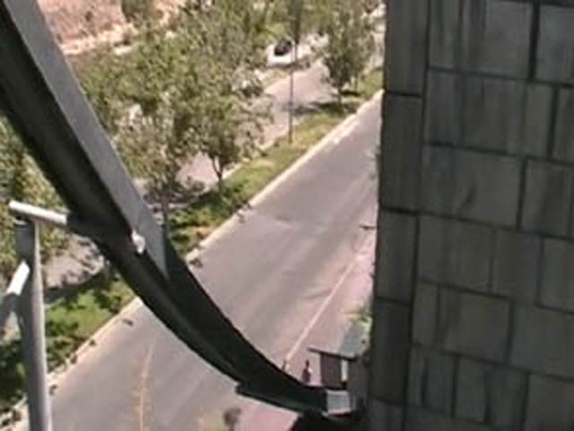

| |
Twisted Fang & Coiled Cobra Review
We're on the Black Snake Summit, home of 2 waterslides. Here we'll talk about two of those. Twisted Fang & Coiled Cobra. When you look at these slides, you are visually stunned as these slides twist around each other and have really tight helixes up in the air. But once you're sliding down, it's not that pleasant. Your back is getting all scratched up and you're banging your head from side to side. Oh yes, another thing I learned in 2008. DO NOT SIT UP TO AVOID THE BACKSCRATCHING!!!!! I tried this, and while it worked, when I exited the slide, I bumped my head and got a nasty bruise. I would recommend skipping these slides if your time at Six Flags Hurricane Harbor is limited.
1/10
Location: Six Flags Hurricane Harbor
Opened: 1997
Built by: White Water Slides
Last Ridden: June 14, 2017

Venom Drop Review

We're on the Black Snake Summit, home of 2 waterslides. Here we'll talk about Venom Drop. The one straight slide they used to have (Before Bonzai Pipelines came in). Venom Drop,was a drop slide. The really good news about this ride was that there was never a line for it. When everyone walked up to it, their hair stuck out, and then they walked away saying "Venom Drop looks too intense for me." Just like an RCT Peep. But we are not RCT Peeps and we rode this thing. You get to the top and it definetly has an intimidating look to it, especially with everyone staring at you, and then you drop. The drop is alot of fun and you gain alot of speed. But when you get to the bottom, you definetly thrash around a little bit, and then you're done. And even if the park is packed, you could marathon it due to it not having any wait. Though you were lucky if it was open.
7/10
Location: Six Flags Hurricane Harbor
Opened: 1997
Died: 2013
Built by: White Water Slides
Last Ridden: August 29, 2012
Twisted Fang & Coiled Cobra Photos


Venom Drop Photos



|